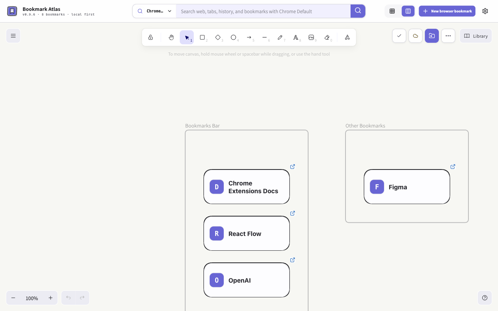

Your new tab.
More than bookmarks.
A full Excalidraw canvas in your Chrome new tab. Save bookmarks, draw, take notes, and embed webpages or videos alongside your ideas.
Native bookmarks · Local first · AI optional

From saved link
to useful workspace.
Import existing bookmarks or capture the page you are visiting. Manual organization needs no extra account or AI service.
Read the full guideAdd
Capture the current page from the extension icon, or import existing bookmarks into the canvas.
Organize
Move and select cards, choose icon, compact or detailed views, add notes and frames, or preview optional AI suggestions before applying.
Open
Click a card’s favicon to open it, or search bookmarks, open tabs and browsing history.
Local first.
Clear about the rest.
Read the privacy policyYour workspace stays close
The full canvas stays local. Eligible lightweight canvas data can sync through the same Chrome account when sync is available and quota allows; Chrome does not guarantee a delivery time. Attachments stay on the device where you add them. Export a full backup to keep a complete copy.
AI, only when you choose it
Use your own service, approve selected metadata, and preview before applying. Saved credentials are encrypted locally, excluded from sync and backups, and are not an OS keychain. Provider fees and policies apply.
Every update, explained.
Chrome Web Store: 0.9.6. Published on 2026-10-22.
The public release supports Chrome. Edge and Safari are not officially supported.
Read version introductions and historyHelp shape the next canvas.
Star the project, report a problem, or tell us which website belongs on your canvas.
Include a public URL, steps, expected behavior, and a screenshot with private details removed. Never post credentials, API keys, full backups, or private bookmarks.